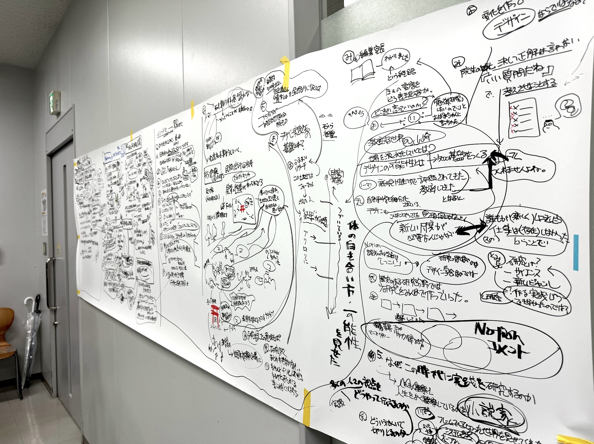
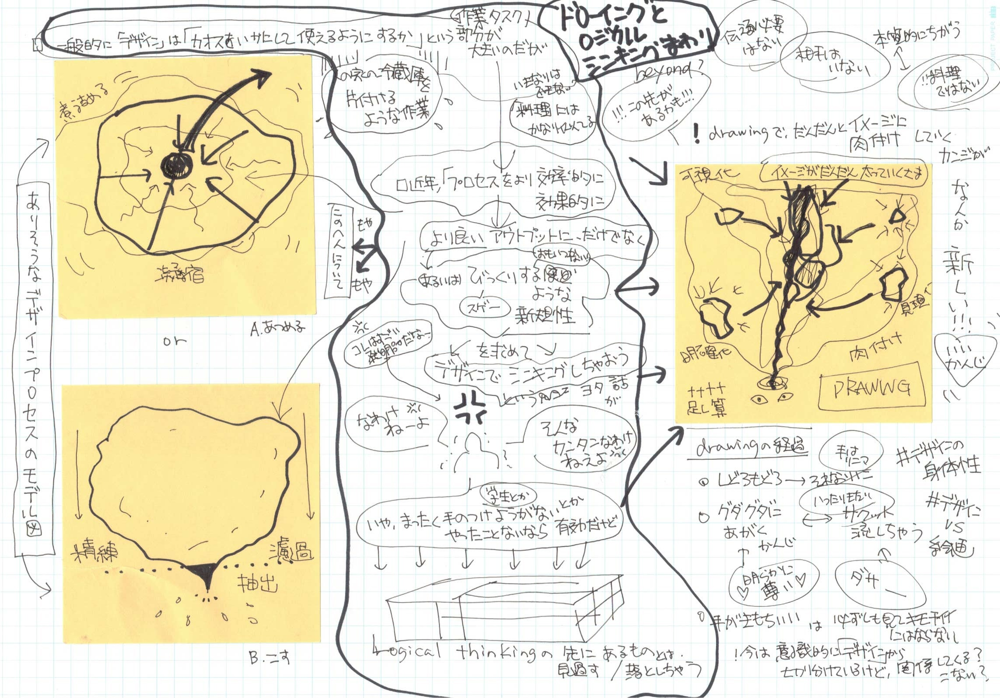
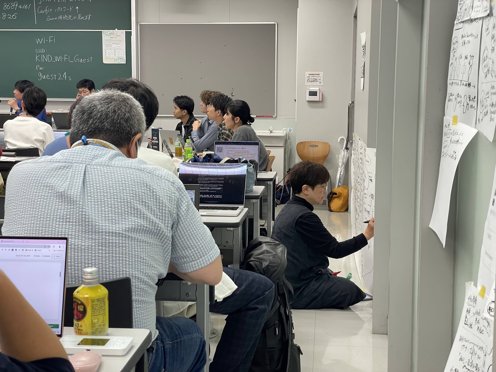
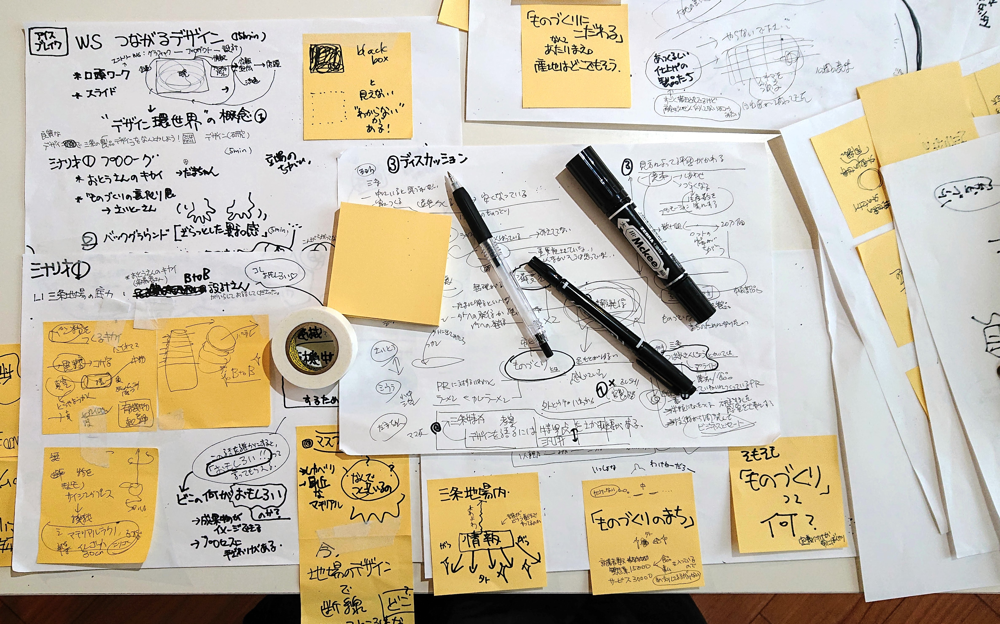
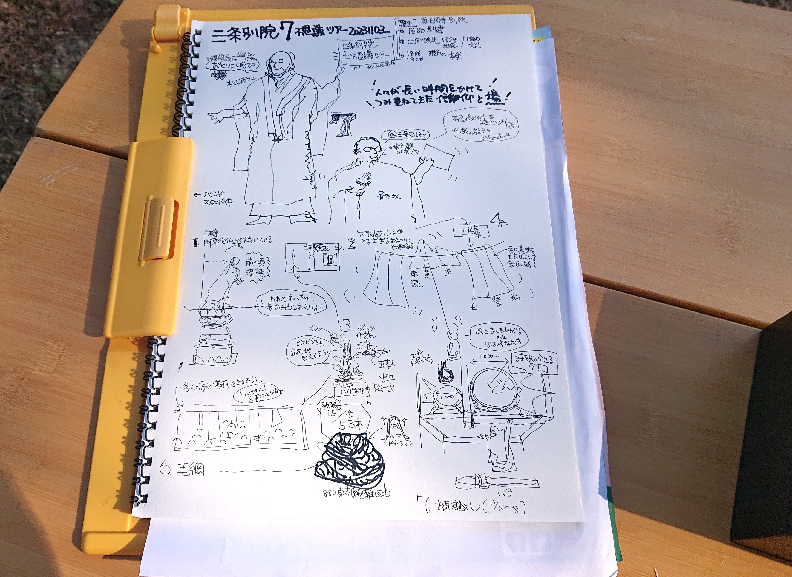
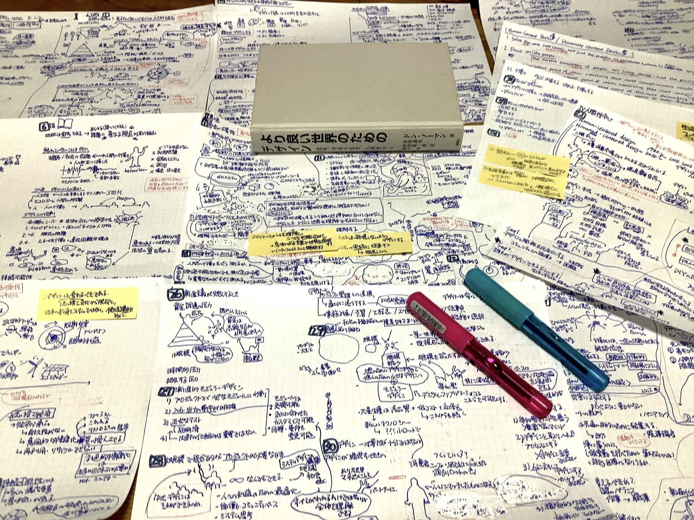
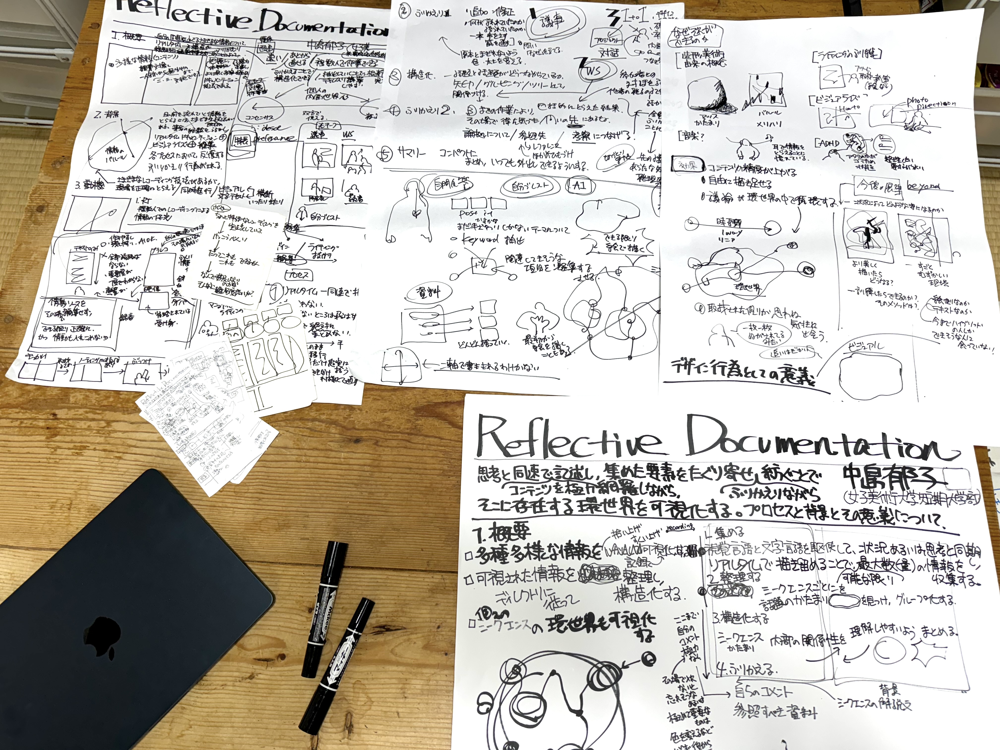
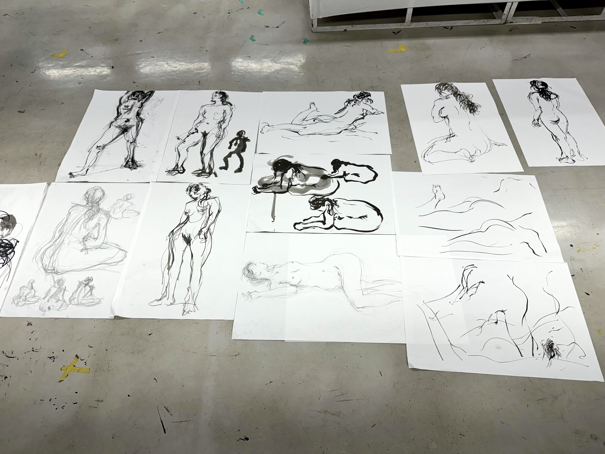

話者の発現・対話と議論・自らの思考と対峙し、並走しながら同じ速度で描いていく——テキスト・グラフィック・記号を駆使し、情報を網羅しながら構造を可視化し、あらたなデザイン的飛躍につなげる。


他者の発表や会議、フィールドワークをその場で瞬間的・視覚的に記録する。整理より速度を優先し、思考のタイムラインに同期しながら描き続ける。

自分の思考の中に浮かぶアイデアや概念を、まるで他者を眺めるようにリアルタイムで視覚化する。一人での思考整理・アイデア展開・自己省察に用いる。

インタビューや現場取材の場で、得られた情報と洞察をリアルタイムに描き記す。非構造化インタビューの技術を下敷きに、事実と主観を色分けしながら記録する。

書籍や資料を読みながら、内容を視覚的に描き記す。文字を追うだけでは得られない全体像と構造が、描くことで浮かび上がる。

プロジェクトの「デザイン環世界」を描き出す。取材や自己省察で見つかった「デザイン要素」を一つの系に入れ込んで、因果関係やディスコミュニケーションの現状を検証していく。

対象を観察しながら描くことで、見えていなかった構造や関係性が浮かび上がる。描く行為そのものが、深い理解への探索プロセスとなる。